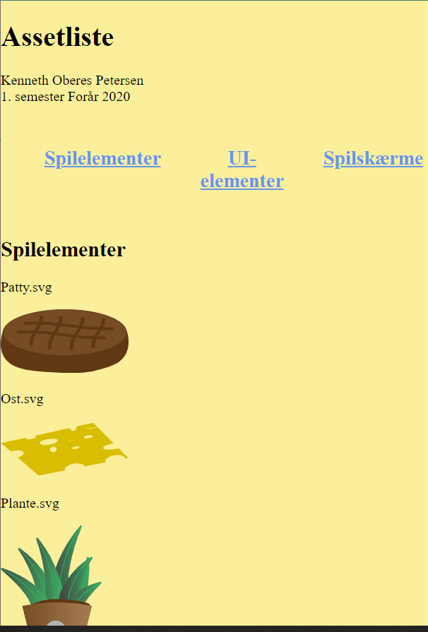

Animation
Assetlist and design documentation
For this project I had to animate a whole game. I chose to use Adobe Illustrator, to illustrate all of my assets, UI-elements, characters and the game backgrounds. Everything I've developed has been documented in the assetlist and design documentation that is linked on the right.
It was a challenge for me to use Adobe Illustrator, but it was a really fun process developing my ideas into animated graphic.
I also used some of the preparation technique that I learned earlier, like styletile and moodboard, and learned how to develop these into a wider styletile. This is also shown in the design documentation.
Assetlist
 Link til AssetlisteDesign documentation
Game
The name of the game is Build the burger.
This game is singlehandedly coded and animated by me.
The game has been coded in HTML, CSS, Javascript and with the use of SVG files made in Adobe Illustrator.
For the game I developed a statemachine diagram which is seen on the right. This diagram explains how the game works, and is a good guideline of how to stay in order, when coding the game.